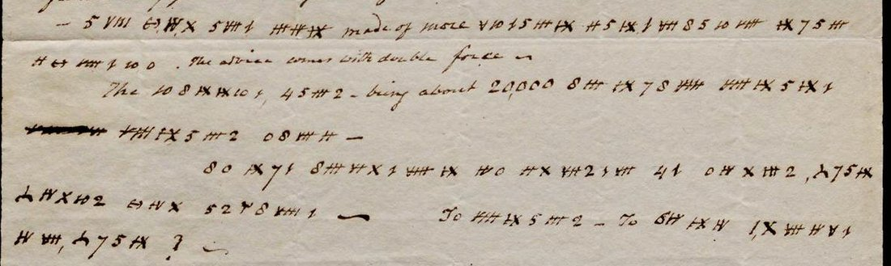
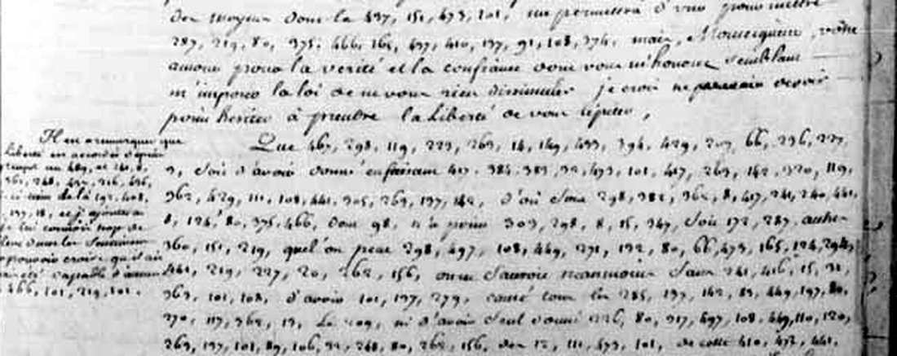

Results so far
Every entry by date, 1250–1991. Hover or tap a dot for the story; click a category under the bar to isolate it.
Entries by century, 1250–1991. Tap a century for its write-ups.
All 9 categories
breakdown
122 from the ciphertext alone, 140 from plaintext beside the ciphertext, 26 from plaintext found elsewhere. 179 of them with outside contributors. In 10 of them the key was recovered but the text does not yet read.breakdown
130 with a known key, 48 with a key matched here from another document, 108 from a complete existing decipherment. In 15 of them the key was applied but the text does not yet read.706 entries, one per row of the results tables, each classed by how its text was obtained. 22 turned out not to be ciphers or could not be reached and 11 are in progress, which leaves 673 attempted; every percentage here is of those 673.Percentages are of the 673 attempted.
Counted from the results tables in the repository README by _build_stats.py; regenerated 16 November 2026. Rows are documents, not correspondents.
Three ways to help
Or check one of 232 readings waiting for an independent check, or send a cipher that is not listed. Every contribution is credited. How to contribute →
Start with these

Ibn al-Qaysarani’s cipher verses, about 1330–1370 (Penn LJS 51)
The last cipher in a Mamluk secretary’s book of cipher verses (University of Pennsylvania, LJS 51, f. 106v) lost its solution with the end of the manuscript. Its 22-sign alphabet was recovered from a red gloss over the first five signs, the word for eyelids repeated three times, and the ṭawīl metre. The seven lines are two Arabic love verses; all 89 signs have a value.
I lay awake, though my eyelids are sound, and did not sleep; she slept and was never wakeful, though her eyelids are sick
read →
Aaron Burr to Joseph Alston, July 1804
A week after the duel with Hamilton, Burr wrote to his son-in-law with ten lines in a cipher of figures and stroke signs (Gilder Lehrman GLC01523), catalogued as undecoded. It is a simple substitution, its key recovered here from the cipher alone, and all 132 signs read. Burr asks what Alston would advise if the coroner’s jury finds murder: to stand trial, to go to Europe, or what?
“If the inquest of murder be found, what would you advise – To stand – to go to Europe or what?”

 read →
read →

Siena no. 12: a royal bride for Sforza, Naples 1413
A letter to the condottiere Sforza Attendolo, Naples, 10 March 1413, wholly in a homophonic cipher of 46 graphic signs, address included (Concistoro 2308 fasc. 2 no. 12, DECODE R4790). George Lasry recovered the key from the ciphertext alone with CTTS and Claude in October 2026; more than 95% of the text reads. King Ladislaus offers Sforza a bride of his own house, a Malatesta or a Brancaleoni girl.
“El signore [Re] ve vole dare quale ve piace de quelle doe”
 read →
read →

Charles XII to the Council of the Realm, Bender, 26 April 1710
Charles XII’s letter from Bender to the Swedish Council of the Realm, with a second copy for his envoys in London and The Hague, in a Swedish nomenclator of about 1,100 numbers in alphabetical order (NLA Stade Rep. 5a Nr. 670). Brice Dudout rebuilt the key from a ciphered troop list and its clear draft in the same file, tested it on letters not used to build it, and deciphered both copies: 639 of 640 groups, 278 of 303 cipher words read once probable values and clerk’s slips are counted as holes. After the Danish defeat at Helsingborg the King offers Denmark peace under the mediation of the Maritime Powers and gives the Council a free hand to agree an armistice, even for a whole year. Contributed by Brice Dudout.
“så äre wi benägne att inga med Konungen i B.B. en billig fred under Sjömakternas mediation”
 read →
read →

Lejava to Stomoniakov: fifty thousand gold rubles, 5 April 1921
A radio telegram intercepted at Constantinople and filed unread. A columnar transposition of Russian in Latin letters, 11 columns, key recovered from the ciphertext alone. It orders fifty thousand gold rubles to Berlin for the Scientific-Technical Department’s orders; 9 of its 21 words read as the decryption stands, the rest carry slipped letters or supplied words.
pyat’desyat tysyach rublei zolotom
 read →
read →

The Japanese Army’s numeric kana cipher, 1902–04
Imperial Japanese Army telegrams in which two digits stand for one kana: the vowel row, then the consonant column counted backwards. Harumi-Matsuba found them in the JACAR files and rebuilt the table from one telegram against the readings pencilled on its outgoing draft. Four telegrams read, one of them with no translation: a request of January 1904 for maps of Korea. Checked here with an independent decoder, a permutation control and the forms.
ヨヨウノカンコクチズダイヨ · 要用ノ韓国地図貸与サレタシ · Kokura, 25 January 1904

 read →
read →
Twenty favourites: the funny, the historic, the ingenious, the hardest →
Latest findings

 Trémais to the minister of the Marine, Montréal, 6 November 1759 — the cipher letter of the commissaire sent to watch Bigot, deciphered in part with a key rebuilt from his September letter and its contemporary decipherment: Bigot not alone to blame, governor and intendant “fantômes” governed by Péan and Mercier write-up
Trémais to the minister of the Marine, Montréal, 6 November 1759 — the cipher letter of the commissaire sent to watch Bigot, deciphered in part with a key rebuilt from his September letter and its contemporary decipherment: Bigot not alone to blame, governor and intendant “fantômes” governed by Péan and Mercier write-up- Michigan–Oslo papyrus — A name in the Isis spell on the front fits two tentative letters on the back. A third would have to be beta where the editor reads tau. Open investigation
- Jerash silver scroll — A curved stroke recurs in lines 6 and 9. The neighboring upright remains ambiguous, leaving the proposed Arabic reading unresolved. Open investigation
- Sir Harford Jones to Lord Minto, Bombay, 28 April 1808 — key recovered from the ciphertext alone: a homophonic figure cipher copied by James Morier reads as English, 646 of 654 cipher words, after a first held-out test failed and a second, pre-registered one passed; Jones suspends his departure for Persia to avoid “clashing authorities” with Malcolm’s mission. Contributed by Brice Dudout with an AI model; the reading’s grade is an AI agent’s, not a person’s write-up
- Four lines of signs, Sachau 218 f. 231a (Berlin SBB), Midyat miscellany — attempted, not read: 59 signs of 26 shapes transcribed; one pre-registered abjad-numeral key not supported (12th of 201), but a matched control shows the test would almost never pass even with the right key, so the key is not ruled out; the lines may be a reckoning table and not a cipher write-up
Browse the write-ups
By how the text was obtained
All 660 write-ups, with filters and search → · the atlas · the key web · what the methods mean
The Unsolved Catalogue
2,179 undeciphered letters, messages and series from 1098 to 1953. Entries link to their sources and carry the available shelfmarks and checks. 381 have been looked at on the image.
Top of the queue
- Maderista junta at El Paso: telegrams "texto en clave" that the catalogue leaves undeciphered, among hundreds deciphered at the timepriority 9.0Mar - May 1911 (and 1914)
- Düben to Queen Lovisa Ulrika, system B ('Chiffer n:o 2'), 1764priority 8.45 Oct - 31 Dec 1764
- Conrad Biermann's copybook, 1675: letters outside key K55priority 8.41675-1676
- Cardinal Ercole Gonzaga → Ferrante Gonzaga, two letters with cipher (one sheet entirely in cipher)priority 8.4undated (1539-1557)
- Prince Philip → Ferrante Gonzaga, three Spanish letters partly in cipher, decoded with the Imperial Cipher table but not read (25 Jun 1546, 14 Mar 1553, and one catalogued 16 Jun 1563)priority 8.425 Jun 1546 - 14 Mar 1553
- Lovisa Ulrika correspondence, system A: 6 Mar 1764 and the glossed letter of 15 Nov 1765priority 8.46 Mar 1764; 15 Nov 1765
Corrections and pointers to existing decipherments are welcome: a catalogue entry marked “unsolved” is often a literature search away from “solved in 1858”.
Contributors and sources
Top contributors
- Daniel Bourdeauproject lead · 498 targets
- Brice Dudout257 targets · 301 direct
- George Lasry142 targets · 93 direct
- Satoshi Tomokiyo122 targets · 65 direct
- WAINUT100 targets · 246 direct
- Andrew Beling45 targets · 71 direct
- Michael Brackx21 targets · 30 direct
- Malcolm McBratney19 targets · 36 direct
- Harumi-Matsuba14 targets · 21 direct
Where the targets come from
Tomokiyo’s catalogue, the DECODE database, Cryptoole, HCPortal, sweeps of Gallica, the Nationaal Archief, the Archives nationales and FranceArchives, and Riksarkivet, calendars and printed editions, MysteryTwister, Elonka Dunin’s famous-codes list, Schmeh’s Top 50 and the contributors.